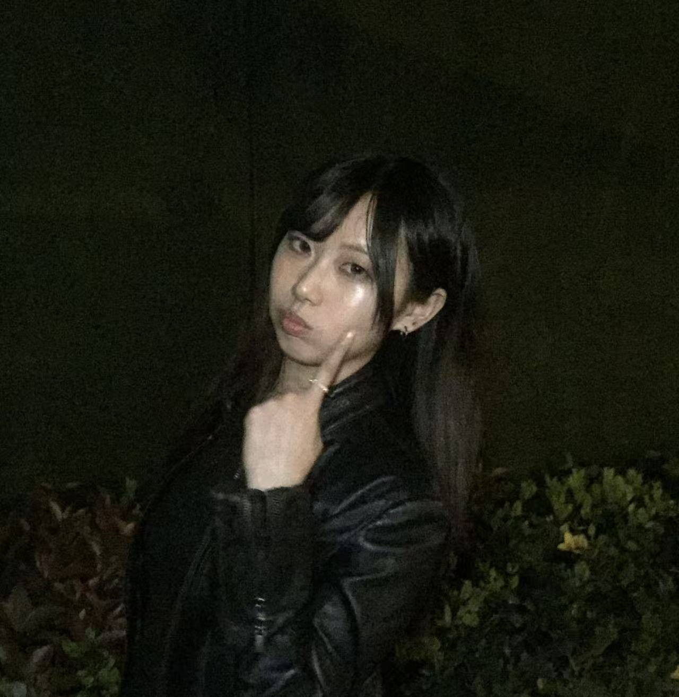

VISUAL COMMUNICATION / PORTFOLIO
保持好奇，让想法发生。*Hello, I'm
宗诗童*
山东工艺美术学院 2023—2027 / 本科
视觉传达设计应用方向
用图形、色彩和版式表达想法，
也把创意延伸到内容、影像与真实的生活。
01 / 设计与表达
品牌与包装 · 海报与字体 · 书籍编排
内容策划 · 视频剪辑 · 摄影与绘画
02 / 我的工具箱
Photoshop · Illustrator · InDesign
Figma · Adobe XD · 剪映 · Canva
03 / 语言能力
英语 CET-4 / CET-6 · 英文读写良好
日语 · 基础韩语 · 普通话二级甲等
04 / AI × 持续学习
ChatGPT · Codex · Gemini · 即梦
辅助创意构思、文案优化与视觉探索

THIS IS ME :)在生活里寻找灵感。✳
DESIGN · CREATE · EXPLORE往下看看我的作品 ↓
THREE SIDES OF ME / 能力目录
Contents:)
三个入口，
认识不同面的我。
拖一拖，随意摆放 · 点一下，浏览作品
A COLLECTION OF MY WORK
我的创作合集*
多看一点，
也看见更多可能。